CCVS: Context-aware Controllable Video Synthesis
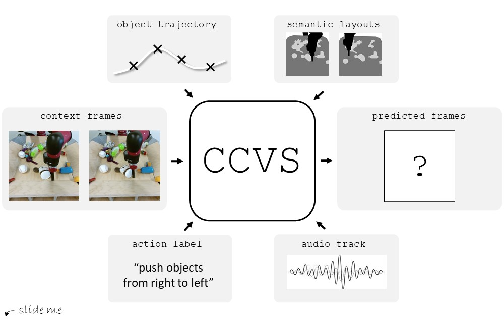
This presentation introduces a self-supervised learning approach to the synthesis of new video clips from old ones, with several new key elements for improved spatial resolution and realism: It conditions the synthesis process on contextual information for temporal continuity and ancillary information for fine control. The prediction model is doubly autoregressive, in the latent space of an autoencoder for forecasting, and in image space for updating contextual information, which is also used to enforce spatio-temporal consistency through a learnable optical flow module. Adversarial training of the autoencoder in the appearance and temporal domains is used to further improve the realism of its output. A quantizer inserted between the encoder and the transformer in charge of forecasting future frames in latent space (and its inverse inserted between the transformer and the decoder) adds even more flexibility by affording simple mechanisms for handling multimodal ancillary information for controlling the synthesis process (eg, a few sample frames, an audio track, a trajectory in image space) and taking into account the intrinsically uncertain nature of the future by allowing multiple predictions. Experiments with an implementation of the proposed approach give very good qualitative and quantitative results on multiple tasks and standard benchmarks.
@article{lemoing2021ccvs,
title = {{CCVS}: Context-aware Controllable Video Synthesis},
author = {Guillaume Le Moing and Jean Ponce and Cordelia Schmid},
journal = {arXiv preprint},
year = {2021}
}
16-frame video with the start frame taken from a real video
Real start frame
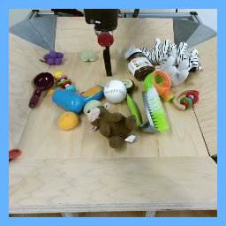
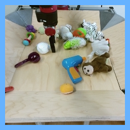
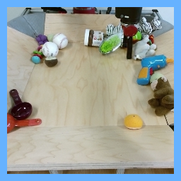
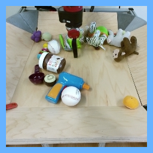
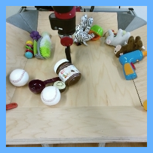
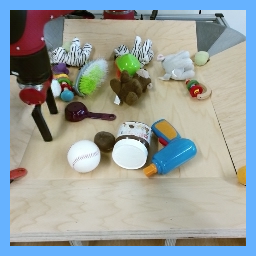
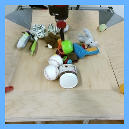
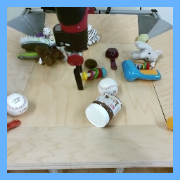
Synthetic video
16-frame video with the start & end frames taken from a real video
Real start frame
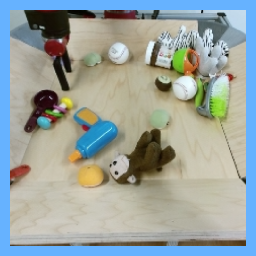
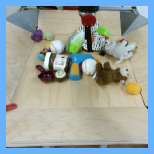
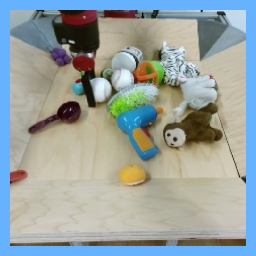
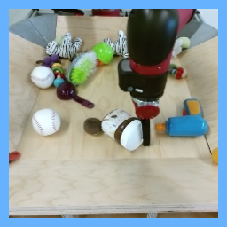
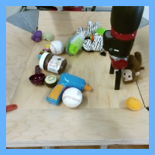
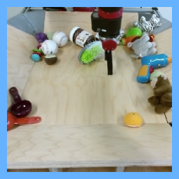
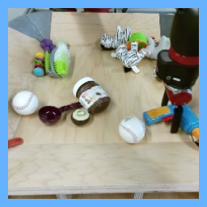
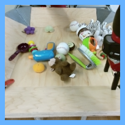
Synthetic video
Real end frame
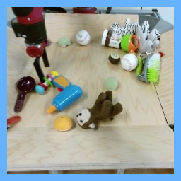
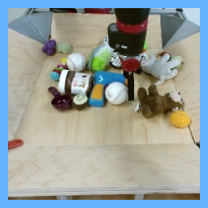
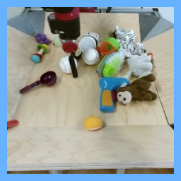
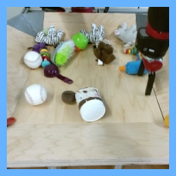
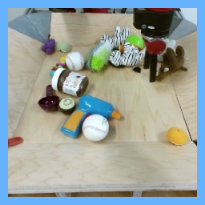
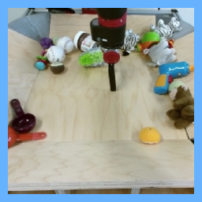
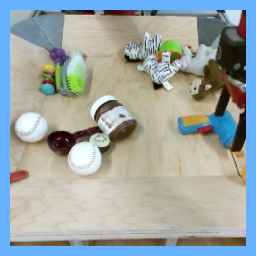
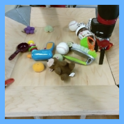
16-frame video with the start frame & robotic arm trajectory taken from a real video
Real start frame
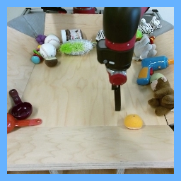
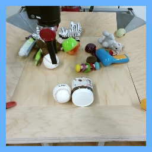
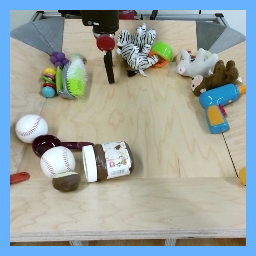
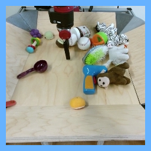
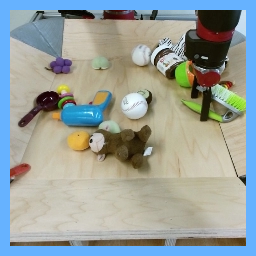
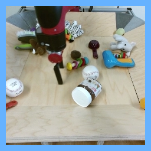
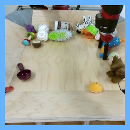
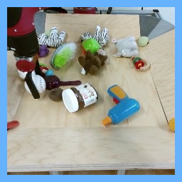
Synthetic video + target real trajectory (white cross, best viewed by playing individual videos in fullscreen mode)
16-frame video using start token to launch the synthesis process
Synthetic video
16-frame video using StyleGAN2 to synthesize the start frame
Synthetic video
90-frame video with 15 priming frames & corresponding audio track for all timesteps taken from a real video
Pair of real video (left) & synthetic one (right) with the original sound added on top
30-frame video with 3 priming frames & corresponding semantic layouts for all timesteps taken from a real video
Combination of real video (left), real layout (middle) & synthetic video (right)
64-frame video corresponding to a given action label
This work was granted access to the HPC resources of IDRIS under the allocation 2020-AD011012227 made by GENCI. It was funded in part by the French government under management of Agence Nationale de la Recherche as part of the "Investissements d’avenir" program, reference ANR-19-P3IA-0001 (PRAIRIE 3IA Institute). JP was supported in part by the Louis Vuitton/ENS chair in artificial intelligence and the Inria/NYU collaboration.
The documents contained in these directories are included by the contributing authors as a means to ensure timely dissemination of scholarly and technical work on a non-commercial basis. Copyright and all rights therein are maintained by the authors or by other copyright holders, notwithstanding that they have offered their works here electronically. It is understood that all persons copying this information will adhere to the terms and constraints invoked by each author's copyright.